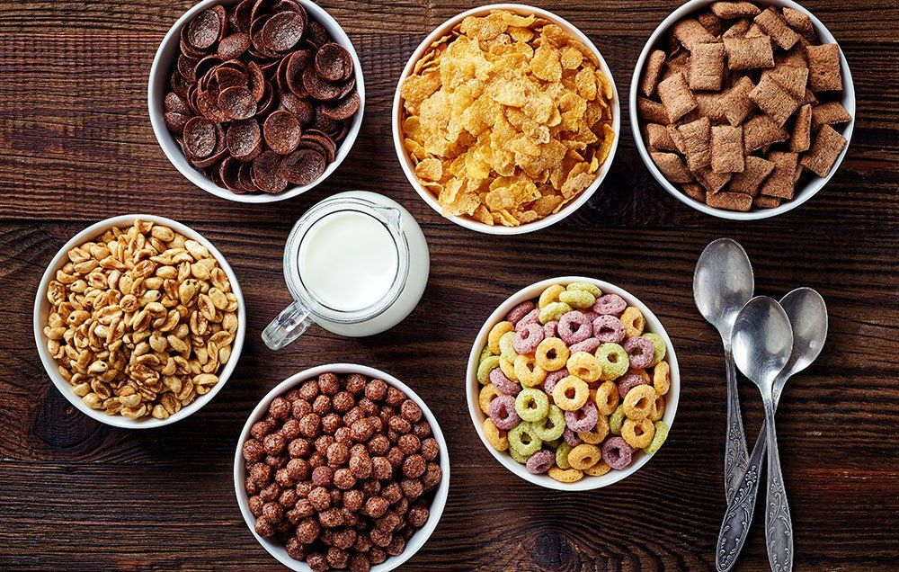

When making cereal sometimes we make many cereal.
A timeless recipe for an early riser, cereal is quick and easy to prepare. Only requiring a bowl, spoon,
cereal, and milk. Anyone can prepare this dish.
Ingredients and Tools:
- Cereal of your choice
- Milk (or plant milk)
- Bowl
- Spoon
Steps:
- Place bowl on flat surface
- Pour cereal into bowl
- Pour milk of choice over
- Stab spoon into cereal and milk mixture, resting the spoon on the lip of the bowl